Sobre a série
Em que consiste?
The Office é uma série de comédia americana, inspirada na série britânica com o mesmo nome (The Office UK), criada por Ricky Gervais e Stephen Merchant, em 2001. A série acompanha o dia a dia dos funcionários da empresa de papel, Dunder Mifflin, mostrando as suas relações, os problemas e as situações absurdas que acontecem naquele escritório. É apresentada como se fosse um documentário, em que, por vezes, as personagens falam diretamente para a câmara.
Onde se passa a história?
A história passa-se principalmente numa das filiais da empresa localizada em Scranton, no estado da Pensilvânia, nos Estados Unidos. A maior parte das cenas decorre no escritório, mas algumas também acontecem noutros locais, como o armazém, o estacionamento e as casas dos funcionários.
Informações gerais
| Género | Comédia |
|---|---|
| País de origem | Estados Unidos |
| Estreia | 24 de março de 2005 |
| Último episódio | 16 de maio de 2013 |
| Temporadas | 9 |
| Episódios | 201 |
| Canal original | NBC |
| Onde assistir em Portugal | Netflix, Disney+, Amazon Prime Video e SkyShowtime |
| Classificação no IMDb | 9,0/10 |
Realização e produção
A versão americana de The Office foi adaptada por Greg Daniels, com base na série britânica criada por Ricky Gervais e Stephen Merchant. Foi transmitida pela NBC e teve vários argumentistas, incluindo alguns dos próprios atores, como Mindy Kaling, B. J. Novak e Paul Lieberstein.
Prémios e reconhecimento
The Office ganhou vários prémios, incluindo o Emmy de Melhor Série de Comédia em 2006. Apesar de ter terminado em 2013, continua a ser muito popular e é uma das séries de comédia mais conhecidas.
Personagens
Gestão
- Michael Scott (Steve Carell)- É o gerente regional da filial de Dunder Mifflin. Adora ser o centro das atenções e considera-se um excelente comediante. Vê os funcionários como uma família e preocupa-se muito em ser apreciado por todos.
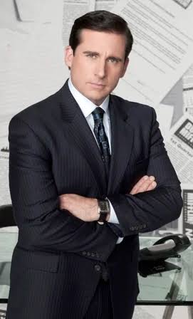
- Michael Scott (Steve Carell)- É o gerente regional da filial de Dunder Mifflin. Adora ser o centro das atenções e considera-se um excelente comediante. Vê os funcionários como uma família e preocupa-se muito em ser apreciado por todos.
Vendas
- Jim Halpert (John Krasinski)- Faz muitas partidas ao seu colega de secretária Dwight e é conhecido pelos olhares que lança à câmara sempre que acontece alguma coisa absurda.
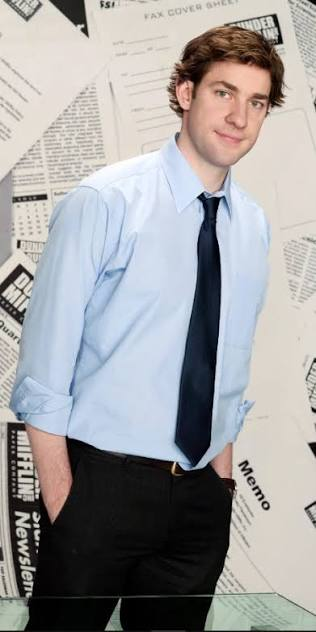
- Dwight Schrute (Rainn Wilson)- É extremamente competitivo e adora seguir regras. Considera Jim como seu inimigo e tenta impressionar Michael, por quem tem uma grande admiração. Tem uma quinta de beterrabas (Schrute Farms).
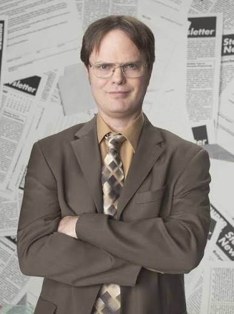
- Stanley Hudson (Leslie David Baker)- Prefere trabalhar em paz e não tem paciência para as reuniões do Michael. Adora fazer palavras cruzadas e está sempre à espera das férias ou do fim do dia de trabalho.
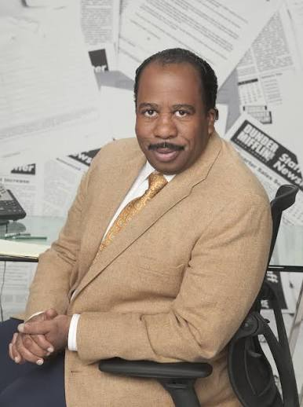
- Phyllis Lapin-Vance (Phyllis Smith)- Apesar de parecer muito querida e simpática, sabe ser irónica e provocadora quando a irritam. Tem um orgulho enorme no marido, Bob Vance, da Vance Refrigeration.
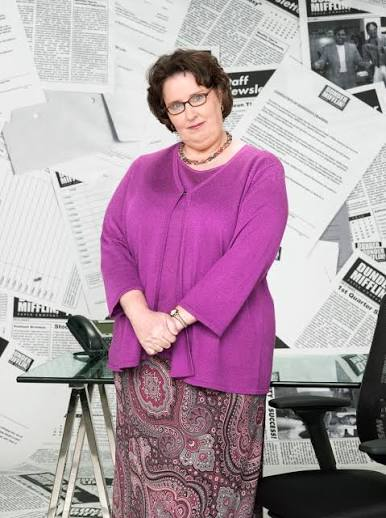
- Andy Bernard (Ed Helms)- Aparece mais tarde, vindo da filial de Stamford. Adora cantar a cappella e falar sobre a Universidade de Cornell, onde estudou. Tenta sempre impressionar os colegas.
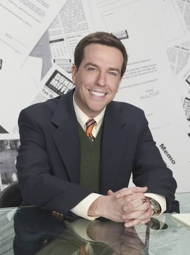
- Jim Halpert (John Krasinski)- Faz muitas partidas ao seu colega de secretária Dwight e é conhecido pelos olhares que lança à câmara sempre que acontece alguma coisa absurda.
Administração e Apoio
- Pam Beesly (Jenna Fischer)- É a rececionista simpática e divertida do escritório que adora desenhar e junta-se frequentemente a Jim nas brincadeiras para provocar o Dwight.
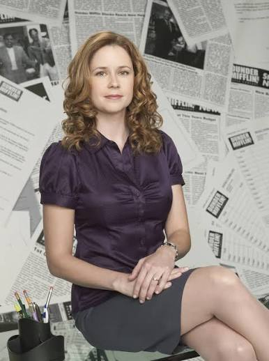
- Ryan Howard (B.J. Novak)- Começa como trabalhador temporário, mas tem grandes ambições profissionais. Preocupa-se muito com a sua imagem e tenta parecer mais importante do que realmente é.
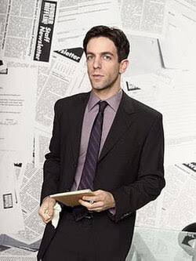
- Kelly Kapoor (Mindy Kaling)- É a responsável pelo apoio ao cliente. Adora falar, principalmente sobre famosos, relações e tudo o que acontece na sua vida. É muito dramática e gosta de ser o centro das atenções.
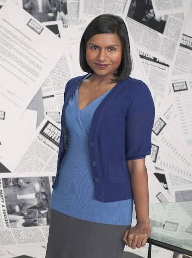
- Toby Flenderson (Paul Lieberstein)- É responsável pelos recursos humanos. Apesar de ser calmo e reservado, é constantemente maltratado por Michael, que o detesta sem motivo algum.
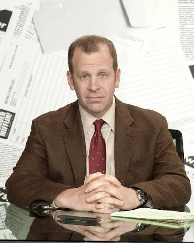
- Pam Beesly (Jenna Fischer)- É a rececionista simpática e divertida do escritório que adora desenhar e junta-se frequentemente a Jim nas brincadeiras para provocar o Dwight.
Contabilidade
- Kevin Malone (Brian Baumgartner)- Adora comer, jogar póquer e tocar bateria (tem uma banda em que ele também é o vocalista para além de baterista, chamada Scrantonicity). É bastante distraído.
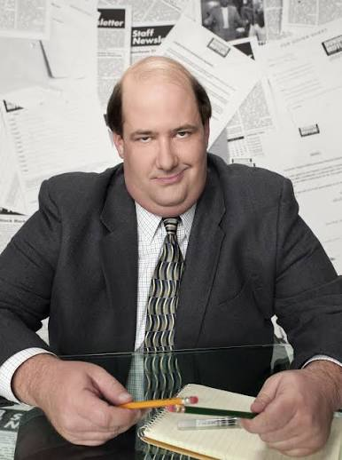
- Oscar Martinez (Oscar Nunez)- É um dos funcionários mais racionais do escritório e costuma corrigir os erros dos colegas. Por vezes, a sua necessidade de mostrar que tem razão acaba por irritar os outros.
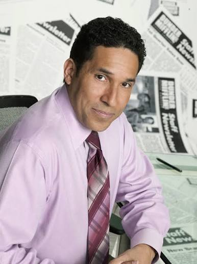
- Angela Martin (Angela Kinsey)- É muito rígida, conservadora e crítica em relação ao comportamento dos colegas. Tem uma enorme paixão por gatos e por pósteres de bebés vestidos de adultos.
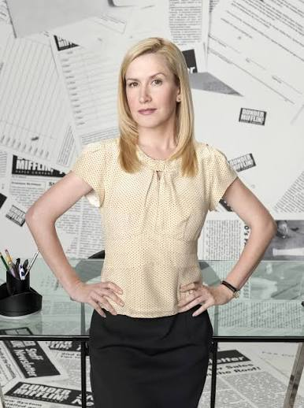
- Kevin Malone (Brian Baumgartner)- Adora comer, jogar póquer e tocar bateria (tem uma banda em que ele também é o vocalista para além de baterista, chamada Scrantonicity). É bastante distraído.
Outros departamentos
- Meredith Palmer (Kate Flannery)- É a responsável por relações com fornecedores. É conhecida por adorar festejar e por beber muito álcool apesar de não admitir que é alcoólica. Não tem vergonha de falar sobre a sua vida pessoal, mesmo quando ninguém quer ouvir.
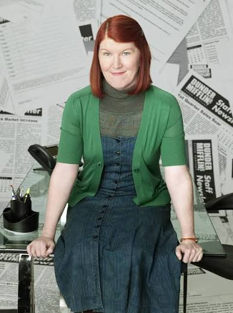
- Creed Bratton (Creed Bratton)- É o responsável pelo controlo de qualidade, mas praticamente nunca trabalha. Tem um passado misterioso e está frequentemente envolvido em atividades ilegais, sem que os colegas saibam muito bem o que anda a fazer.
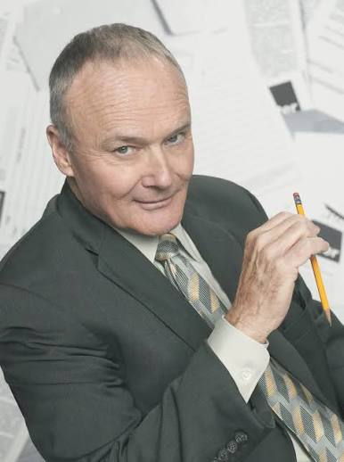
- Darryl Philbin (Craig Robinson)- É o responsável pelo armazém (Warehouse), onde coordena os trabalhadores e as encomendas. Está sempre a gozar com as ideias absurdas do Michael.
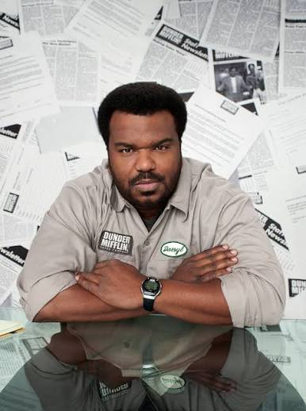
- Meredith Palmer (Kate Flannery)- É a responsável por relações com fornecedores. É conhecida por adorar festejar e por beber muito álcool apesar de não admitir que é alcoólica. Não tem vergonha de falar sobre a sua vida pessoal, mesmo quando ninguém quer ouvir.